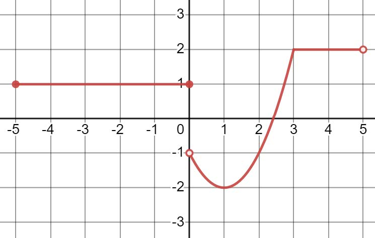
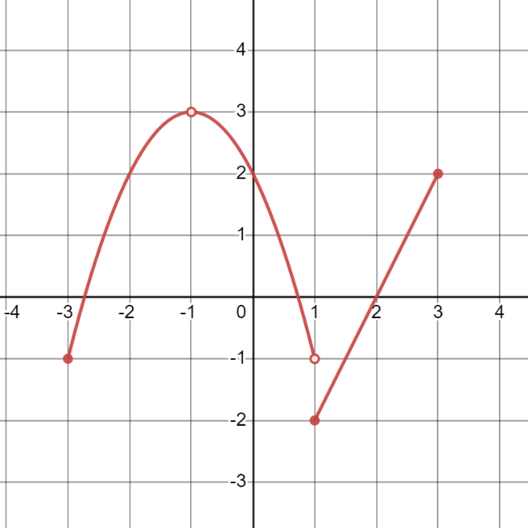

Skip to main content ☰ Contents You! < Prev ^ Up Next > \( \newcommand{\ds}{\displaystyle}
\newcommand{\lrpar}[1]{\left(#1\right)}
\newcommand{\lrbrace}[1]{\left\lbrace #1 \right\rbrace}
\newcommand{\inv}[1]{#1^{-1}}
\newcommand{\R}{\mathbb{R}}
\newcommand{\Z}{\mathbb{Z}}
\newcommand{\dc}{^\circ}
\newcommand{\lt}{<}
\newcommand{\gt}{>}
\newcommand{\amp}{&}
\definecolor{fillinmathshade}{gray}{0.9}
\newcommand{\fillinmath}[1]{\mathchoice{\colorbox{fillinmathshade}{$\displaystyle \phantom{\,#1\,}$}}{\colorbox{fillinmathshade}{$\textstyle \phantom{\,#1\,}$}}{\colorbox{fillinmathshade}{$\scriptstyle \phantom{\,#1\,}$}}{\colorbox{fillinmathshade}{$\scriptscriptstyle\phantom{\,#1\,}$}}}
\)
Section 1 A. Function Notation and Evaluation
Subsection 1.1 Function Notation
Supplements XYZ Sections: All
Subsubsection 1.1.1 Function Notation Intro
Example 1.1.1 .
A function is a relation that assigns exactly one output to every input. The set of inputs is the domain of the function. The set of outputs is the range of the function.
For a function \(y = f(x)\text{:}\)
An important thing to note is that \(f(x)\) does not indicate multiplication between \(f\) and \(x\text{.}\) Rather, \(f(x)\) represents the output or \(y-\) value obtained by plugging the corresponding \(x\) value into the function \(f\text{.}\) A function can be represented algebraically (with a formula), graphically (with a graph), numerically (with a table), or verbally (with a description.)
Another important observation is that we can use variables other than \(x,f,\) and \(y\text{!}\)
For example, let's identify the function name, input variable, and output variable in the following expressions:
\begin{equation*}
z = r(w)
\end{equation*}
Let's try one more!
\begin{equation*}
h = x(t)
\end{equation*}
Some different types of functions with function notation:
Linear Function: \(f(x) = 3x+1\)
Is this different than \(y=3x+1\text{?}\)
Quadratic Function: \(h(t) = 16t^2-8t+20\)
Is \(h(t)\) the same as \(h\cdot t\text{?}\)
Checkpoint 1.1.2 . (Checkpoint 1.1a).
Identify the function name, input variable, and output variable: \(p=g(q)\)
Solution .
Function name:
\(g\)
Input variable:
\(q\)
Output variable:
\(p\)
Checkpoint 1.1.3 . (Checkpoint 1.1b).
\(f(x) = \sqrt{x-4}\)
True or False: We can divide both sides of the above equation by \(f\) to get \(x = \dfrac{\sqrt{x-4}}{f}\)
What is the input variable?
What is the output variable?
Solution .
False: \(f(x)\) is not \(f\) times \(x\text{.}\) Rather, \(f(x)\) is function notation for the output or \(y\) value. Another notation for the given relation would be \(y = \sqrt{x-4}\text{.}\) \(f(x)\) is equivalent to the \(y\) value, just in a different notation. Dividing both sides of the equation by \(f\) is akin to dividing the function by itself.
\(\displaystyle x\)
\(\displaystyle f\)
Subsection 1.2 Function Evaluation
Supplements XYZ Sections: All
Subsubsection 1.2.1 Function Evaluation, Algebraic
Example 1.2.1 .
Find \(f(3)\) given that \(f(x) = (x-1)^2 + 5\)
Find \(g(-1)\) given that \(g(x) = x^2 + \dfrac{1}{x}\)
Find \(h(0)\) given that \(h(t) = 6\)
Solution .
\(\displaystyle f(3) = 9\)
\(\displaystyle g(-1) = 0\)
\(\displaystyle h(0) = 6\)
Checkpoint 1.2.2 . (Checkpoint 2.1).
Find \(f(-2)\) given that \(f(x) = 3x^2-7\)
Find \(g(1)\) given that \(g(z) = \sqrt{z+8}\)
Find \(f(10)\) given that \(f(x) = -1\)
Solution .
\(\displaystyle f(-2) = 5\)
\(\displaystyle g(1) = 3\)
\(\displaystyle f(10) = -1\)
Subsubsection 1.2.2 Function Evaluation, Algebraic Piecewise
Example 1.2.3 .
\begin{equation*}
f(x) = \begin{cases} -(x+1)^2 + 3 & -3\leq x \lt 1 \\ 5 & x=1 \\ x-3 & x \gt 1 \end{cases}
\end{equation*}
Find \(f(-1),f(1)\text{,}\) and \(f(10)\)
Solution .
\(f(-1) = 3\text{,}\) \(f(1) = 5\text{,}\) and \(f(10) = 7\)
Checkpoint 1.2.4 . (Checkpoint 2.2).
\begin{equation*}
f(x) = \begin{cases} \sqrt{6-x} & x\lt 6\\ -2 & x=6\\ x^2 & 6\lt x\leq 10 \end{cases}
\end{equation*}
Find \(f(-3), f(6)\text{,}\) and \(f(7)\)
Solution .
\(f(-3) = 3\text{,}\) \(f(6) = -2\text{,}\) and \(f(7) = 49\)
Subsubsection 1.2.3 Function Evaluation, Graphical
Example 1.2.5 .
The graph of \(y = f(t)\) is given.

Find \(f(-5)\text{,}\) \(f(-1)\text{,}\) \(f(0)\text{,}\) \(f(3)\text{,}\) and \(f(5)\)
Solution .
\(f(-5) = 1\text{,}\) \(f(-1) = 1\text{,}\) \(f(0) = 1\text{,}\) \(f(3) = 2\text{,}\) \(f(5)\) DNE
Checkpoint 1.2.6 . (Checkpoint 2.3).
The graph of \(y=g(x)\) is given. Find \(f(-3)\text{,}\) \(f(-1)\text{,}\) \(f(0)\text{,}\) \(f(1)\text{,}\) and \(f(2)\text{.}\)

Solution .
\(f(-3) = -1\text{,}\) \(f(-1) = DNE\text{,}\) \(f(0) = 2\text{,}\) \(f(1) = -2\text{,}\) and \(f(2)=0\text{.}\)
Subsubsection 1.2.4 Function Evaluation, Numerical
Example 1.2.7 .
\(x\) 1
2
3
4
5
\(f(x)\) \(-1\) 3.7
4.2
3.9
7.4
\(g(x)\) 0
0
5
0
\(-1\)
Find \(f(3)\text{,}\) \(g(5)\text{,}\) \(f(2)-g(5)\text{,}\) and \(g(4)+f(1)\)
Solution .
\(f(3) = 4.2\text{,}\) \(g(5)=-1\text{,}\) \(f(2)-g(5)=3.7-(-1) = 4.7\text{,}\) and \(g(4)+f(1)=0 + (-1.1) = -1.1\)
Checkpoint 1.2.8 . (Checkpoint 2.4).
\(x\) \(-1\) 1
3
5
7
\(f(x)\) 7
6
5
4
3
\(g(x)\) \(-3.14\) 15.9
\(-2.6\) 5.3
\(-5.8\)
Find \(f(-1)\text{,}\) \(g(3)\text{,}\) \(g(1)-f(5)\text{,}\) and \(g(-1)\cdot f(7)\text{.}\)
Solution .
\(f(-1) = 7\text{,}\) \(g(3)=-2.6\text{,}\) \(g(1)-f(5)=15.9-4 = 11.9\text{,}\) and \(g(-1)\cdot f(7) = -3.14\cdot 3 = -9.42\text{.}\)
Subsubsection 1.2.5 Function Evaluation with Subtraction
Example 1.2.9 .
\begin{equation*}
f(x) = -6x+5
\end{equation*}
Find \(f(3)-f(1)\)
Checkpoint 1.2.10 . (Checkpoint 2.5).
\begin{equation*}
f(x)=x^2-3x+7
\end{equation*}
Find \(f(2)-f(0)\)
Subsubsection 1.2.6 Function Evaluation, Symbolic
Example 1.2.11 .
\(f(x) = x^2+5\text{.}\) Find \(f(a)\text{,}\) \(-f(x)\text{,}\) \(f(x+h)\text{,}\) and \(f(3+h)-f(3)\text{.}\)
Solution .
\(f(a) = a^2 +5\text{,}\) \(-f(x) = -x^2-5\text{,}\) \(f(x+h) = x^2 + 2xh + h^2 + 5\text{,}\) and \(f(3+h)-f(3) = 6h + h^2\text{.}\)
Checkpoint 1.2.12 . (Checkpoint 2.6).
\(f(x) = 3x^2\text{.}\) Find the following:
\(\displaystyle f(c)\)
\(\displaystyle f(-x)\)
\(\displaystyle f(x+h)\)
\(\displaystyle f(1+h)-f(1)\)
Solution .
\(\displaystyle f(c) = 3c^2\)
\(\displaystyle f(-x) = 3(-x)^2 = 3x^2\)
\(\displaystyle f(x+h) = 3(x+h)^2 = 3(x^2+2xh+h^2) = 3x^2+6xh+3h^2\)
\(\displaystyle f(1+h)-f(1) = 3(1+h)^2 -3(1)^2 = 3(1+2h+h^2)-3 = 3+6h+3h^2-3 = 6h + 3h^2\)